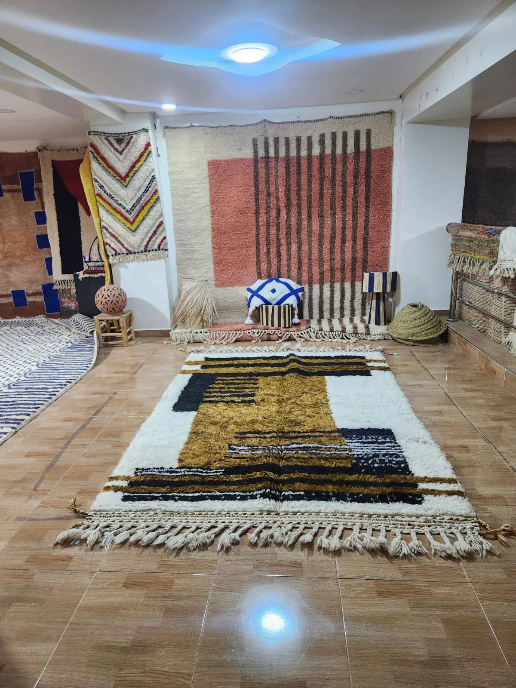
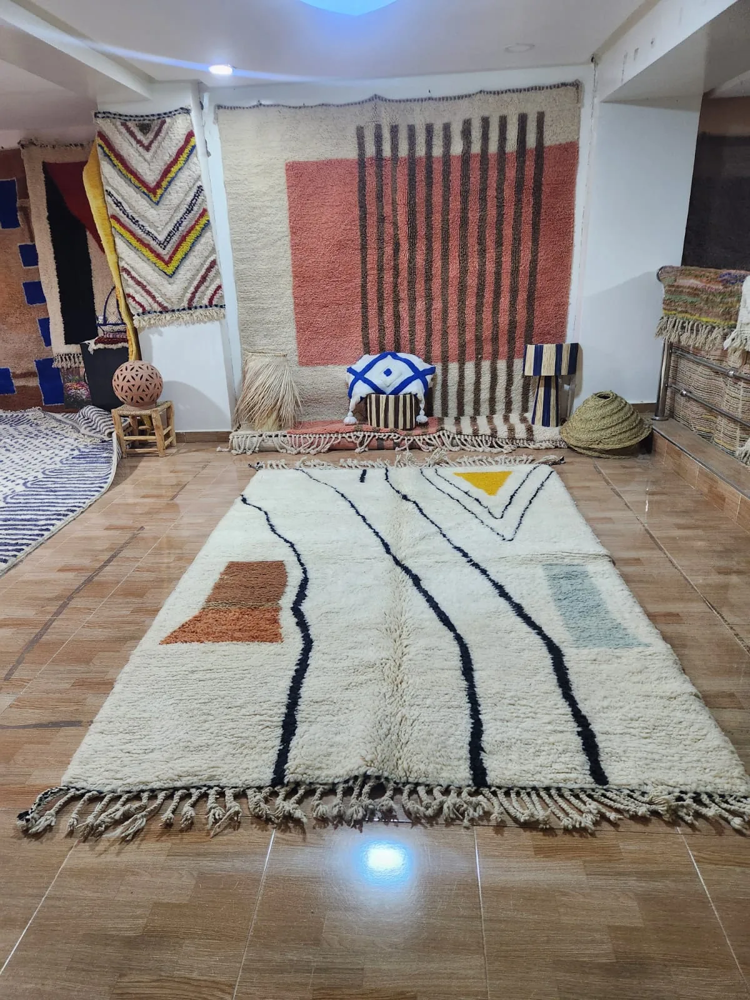

What is a Beni Ourain rug?
A Beni Ourain rug is a hand-knotted wool rug made by the Beni Ourain tribes of the High Atlas Mountains in northeastern Morocco. The name "Beni Ourain" refers to a confederation of seventeen Berber tribes who have inhabited this mountain region for centuries. Each tribe has its own weaving tradition, but they share a defining aesthetic: undyed natural wool in ivory or cream, with geometric patterns — most famously the diamond or lozenge — woven in dark brown or black.
Unlike many decorative rugs, Beni Ourain rugs were made for warmth, not ornament. The Atlas Mountains reach over 4,000 meters, and winters are severe. The rugs' thick, high-pile wool served as bedding, floor insulation and sometimes clothing. The patterns were not decorative choices — they were symbols, specific to each tribe and family, passed from mother to daughter across generations.
- Origin: High Atlas and Middle Atlas Mountains, northeastern Morocco
- Materials: 100% natural undyed sheep's wool — cream or ivory pile, dark geometric pattern
- Technique: Hand-knotted (not woven or tufted) — each knot tied by hand
- Pile height: High — typically 25–40mm, noticeably plush underfoot
- Pattern: Geometric — diamond, lozenge, and line motifs; no two identical
- Time to make: 1–6 months depending on size
- Lifespan: 50–100+ years with proper care
A brief history
Beni Ourain rugs have been woven for at least three centuries, though the tradition almost certainly predates written records. The Berber people of North Africa were weaving wool textiles long before Arab and Islamic influence reached the region.
For most of their history, these rugs never left Morocco. They were personal objects — dowry items, gifts, floor coverings in family homes. It was not until the mid-20th century, when European collectors and designers began visiting Morocco, that Beni Ourain rugs entered the international market.
The design world discovered them earlier than many assume. Le Corbusier used Berber carpets in his 1920s work, including Villa La Roche and the 1925 Pavillon de l'Esprit Nouveau. A Beni Ourain rug appears in a 1938 photograph of Frank Lloyd Wright's Fallingwater. From there, the aesthetic — cream wool, black geometry, deep pile — became synonymous with modernist interiors.
"Every symbol in a Beni Ourain rug means something. The diamond protects. The zigzag represents water. The eye wards away harm. These are not patterns — they are prayers in wool."
By the 2010s, Beni Ourain rugs had moved from niche collector's item to mainstream interior design staple. Instagram, Pinterest and the global rise of Scandinavian minimalism — which pairs naturally with cream wool and bold geometry — made them one of the most searched rug types on earth. Today they are made in two parallel worlds: authentic hand-knotted originals from the Atlas Mountains, and machine-made imitations produced in Asia. Knowing the difference is the single most important skill a buyer can have.

How to recognize a genuine Beni Ourain rug
The market is flooded with machine-made imitations labeled "Beni Ourain style." Here is how to tell the difference.
1. Feel the pile. An authentic Beni Ourain rug is made from natural sheep's wool, usually from the Atlas Mountain breed. It feels distinctly soft, almost fluffy, and has natural lanolin in it — which gives it a slight sheen and a subtle greasy softness that synthetics cannot replicate. A machine-made acrylic imitation feels rough, plasticky or uniformly dense.
2. Look at the back. Turn the rug over and look at the foundation. A hand-knotted rug will show the knots clearly — rows of small bumps or loops, slightly uneven because they were tied by hand. A machine-made rug will have a perfectly uniform latex or fabric backing. If you see an even grid, it is not hand-knotted.
3. Imperfections are proof. Authentic Beni Ourain rugs are not perfect. Lines may waver slightly. The diamonds may be asymmetric. The fringe will be the natural extension of the rug's warp threads — not sewn on. These imperfections are the signature of hand work, and they are a mark of quality, not a defect.
4. Ask about the wool. A genuine rug uses natural, undyed wool for the cream sections. The dark pattern is made from naturally dark wool (not dyed) or occasionally with natural plant dyes. If a seller says the cream is bleached or the pattern color is synthetic dye, that is a compromise on tradition.
5. Weight. Hold one end of the rug and lift. An authentic Beni Ourain rug is heavy — the hand-knotted pile is dense and the wool is solid. A thin, light rug is almost certainly machine-made.
How to style a Beni Ourain rug
Beni Ourain rugs are exceptionally versatile because their color palette — cream, ivory and dark brown or black — works with almost any interior color scheme. Here are the most effective ways to use them.
As a living room anchor. A Beni Ourain rug works best when placed under or in front of a sofa, large enough that the front legs of the sofa sit on the rug. For a standard three-seat sofa, aim for a rug of at least 200 × 300 cm. The cream ground will lighten the room; the dark geometry will add definition.
In a bedroom. Place the rug so that it extends at least 60 cm on each side of the bed and 90 cm at the foot. This creates the sensation of stepping onto softness when you get up in the morning — and with a Beni Ourain, it is genuinely one of the best feelings in a home.
As wall art. A growing trend among interior designers is hanging Moroccan rugs on the wall as textile art. A Beni Ourain hung on a white wall — either from a wooden dowel threaded through the fringe or from clips — makes an extraordinary statement piece. This is particularly effective for smaller rugs (under 150 × 200 cm) that might get lost underfoot.
Layering. Layer a Beni Ourain over a natural fiber rug (jute, sisal, seagrass) for a textural contrast that is both practical (the natural fiber provides structure) and beautiful (the wool softens the top layer).

How to care for a Beni Ourain rug
Beni Ourain rugs are built to last generations — but only with appropriate care. Wool is one of the most resilient natural fibers on earth, but it has specific needs.
Vacuuming. Vacuum regularly, but always in the direction of the pile — never against it, and never with a beater bar or rotating brush. Fold the fringe away from the vacuum head. Once a week is sufficient for a rug in active use.
Rotation. Rotate the rug 180 degrees every six to twelve months to ensure even wear, particularly if one area receives more foot traffic or sunlight than another.
Spills. Blot immediately — never rub. Use a clean white cloth and work from the outside of the spill inward to avoid spreading. For most spills, cold water is sufficient. For wine or oil, a very small amount of diluted wool wash (never standard detergent) and immediate blotting. Do not saturate the rug.
Deep cleaning. Have your rug professionally hand-washed no more than once every two to three years. Avoid any machine washing — the agitation will felt the wool and permanently damage the pile. Avoid steam cleaning.
Sunlight. Natural undyed wool will not fade significantly, but prolonged direct sunlight over many years can yellow the cream sections. Rotate regularly if the rug receives strong sunlight.
What should you expect to pay for a Beni Ourain rug?
The price of a genuine Beni Ourain rug varies widely depending on size, age, complexity of pattern and provenance. As a general guide:
- Small (under 150 × 200 cm): $400 – $900
- Medium (150 × 200 to 200 × 300 cm): $800 – $1,800
- Large (200 × 300 cm and above): $1,500 – $3,000+
- Vintage (30+ years old): Add 30–60% premium
- Made-to-order (custom size or pattern): Add 20–30% premium, allow 8–14 weeks
If a "Beni Ourain" rug is priced significantly below these ranges, it is almost certainly not hand-knotted in Morocco. The cost of the wool, the weaver's time (one to six months), and shipping alone make very low prices impossible for an authentic piece.
Browse Tiziri's Beni Ourain collection — each rug sourced directly from Berber artisans in the Atlas Mountains.
Shop Beni Ourain RugsThe bottom line
A genuine Beni Ourain rug is not a purchase — it is an acquisition. Bought well, from a seller who can tell you who made it and where, it will outlast the furniture around it by decades. The symbols woven into its pile carry meaning that predates the building your home stands in. That is the thing worth paying for.
If you have any questions about a specific rug — its age, origin, or whether it is the right fit for your home — contact us. We are happy to advise without any obligation.